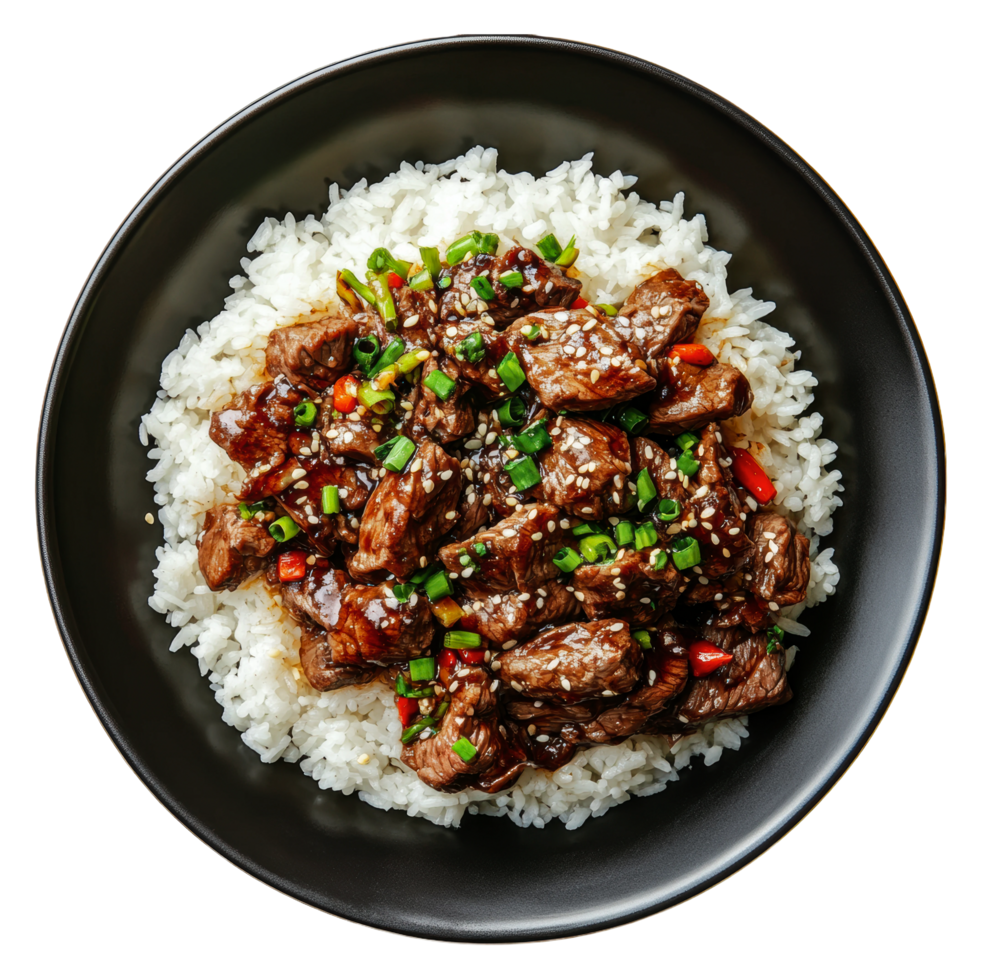

Teryiaki Beef

Description
Teryiaki beef is tangy and tasty, sweet and sour. It is healthy and contains a little of
all the major food groups. A quick, easy meal in a pinch!
Ingredients
- x1 Onion (You can substitute green onion)
- Ground Beef
- x1 Red pepper and x1 Yellow Pepper
- 1-2 bottle Teryiaki sauce
- x1 bag matchstick carrots
- Olive Oil
- Cilantro
- Salt and Pepper
- chopped garlic
Steps
- Chop onion and peppers and saute in a small amount of olive oil and teryiaki sauce.
- Add ground beef and cook till brown, adding more teryiaki sauce.
- Add matchstick carrots and the rest of the teryiaki sauce and cook until the carrots are softish.
- Salt and Pepper to taste.
- Cook rice in a pressure cooker until soft.
- Chop cilantro and add to meat and veggie mix. Cook 1 min longer.
- Serve teryiaki beef and veggies over fresh rice. Add more teryiaki sauce to rice if desired.
Home